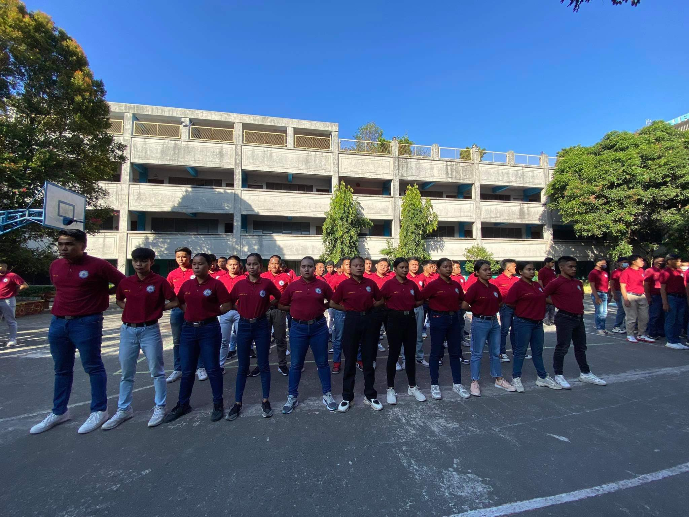
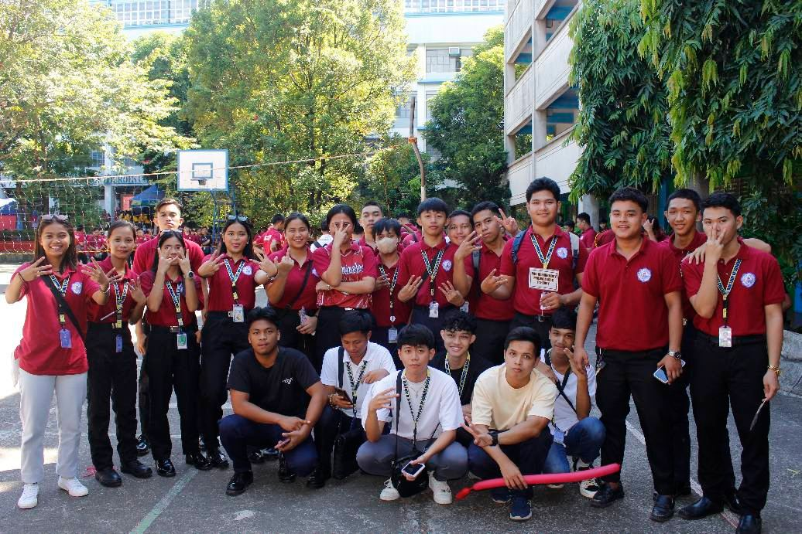

HISTORY OF CRIMINOLOGY
“Criminology is the scientific procedure to studying both social and individual criminal actions. It is divided up into several separate disciplines including Psychology, Economics, Political Science, Natural Science, Biology and the Evolution and D evelopment of people. While other investigative professionals are in charge of who committed a crime and how, criminologists are responsible for answering why someone would be led to breaking the law or causing a crime. The field of study has a long, rich history and has changed a lot.”